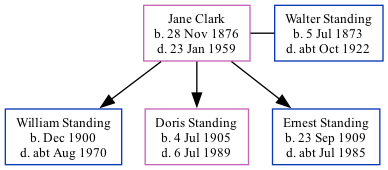

Jane Elizabeth Standing (née Clark) 1876 - 1959
[ Home ] | [ Calendar ] | [ Surnames Index ] | [ Family History ], Jane Clark, the wife of Walter William Standing (the third cousin twice-removed on the father's side of Nigel Horne), was born in Cranbrook, Kent, England on Nov 28, 1876<span class="citation">1,2,3</span> and married Walter (a laundry foreman with whom she had 3 children: <a href="I2433.html">William James</a>, <a href="I2434.html">Doris Elizabeth</a> and <a href="I2435.html">Ernest Henry</a>) on Christ Church, Church Road, Kilndown, Kent, England on Nov 12, 1898<span class="citation">5</span>.</p><p>Throughout her life, she lived on Lansdowne Road, Charlton, London, England on Mar 31, 1901<span class="citation">1</span>; and at 90 Charlton Lane in Charlton on Apr 2, 1911<span class="citation">6</span>. <p>She died on Jan 23, 1959 in Charlton<span class="citation">4</span>.
Children
- William James was born in Dec 1900
- Doris Elizabeth was born on Jul 4, 1905
- Ernest Henry was born on Sep 23, 1909
Citations
- 1901 England, Wales & Scotland Census - Findmypast (was age 24 and the wife of the head of the household)
- England & Wales births 1837-2006 - Findmypast
- Kent Marriages And Banns - Findmypast
- England & Wales deaths 1837-2007 - Findmypast
- Kent Marriages - Findmypast
- 1911 Census for England & Wales - Findmypast (was age 34 and the wife of the head of the household)
Media
England & Wales deaths 1837-2007 - BMD/D/1959/1/AZ/001287/020
Kent Marriages - PRS/FHS/KENT/MAR143/001400/B
Kent marriages and banns - PRS/KENT/MAR/0027466/2
Kent, Canterbury Archdeaconry banns - GBPRS/CANT3/BANNS/001097/2
England & Wales births 1837-2006 - BMD/B/1876/4/AZ/000104/156
Family Tree
Generated by Ged2Site. Last updated on Jul 20, 2025